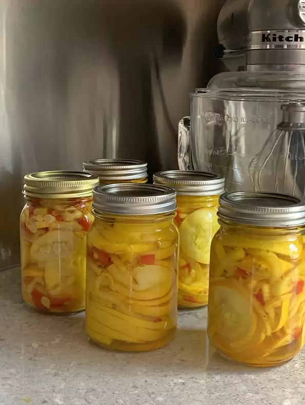

Pickled Squash

Description
Set some of that abundant summer squash aside for the winter months with this awesome pickled squash recipe.
Ingredients
- 1/4 cup salt
- 2 1/2 pounds young yellow squash and zucchini, sliced into rounds
- 1 green bell pepper, seeded and sliced into strips
- 2 small onions, thinly sliced
- 2 1/4 cups white sugar
- 2 cups distilled white vinegar
- 2 teaspoons mustard seed
- 1 teaspoon ground turmeric
- 1 teaspoon celery seed
Method
- In a large non-aluminum pot, combine the squash, bell pepper, and onions. Cover with salt, and let stand for 2
hours to release the liquids. Stir occasionally.
- Just before the 2 hours are up, combine the sugar, vinegar, mustard seed, turmeric and celery seed in a saucepan.
Bring to a boil. Drain the salty liquid from the vegetables. Pour the spice brine over the vegetables, and let
stand for 2 more hours.
- Bring to a boil once again, and simmer for about 5 minutes. Ladle into 1 pint sterile jars, filling with the liquid
to within 1/4 inch of the top. Wipe rims with a clean towel, and run a thin spatula around the inside of the jar
to remove air bubbles. Seal with lids and rings. Process for 10 minutes in a simmering
water bath to seal completely.